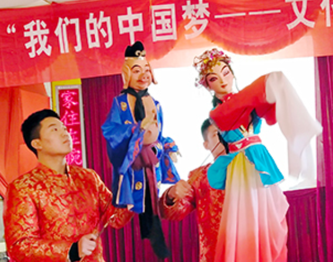

回到资讯孝义惠民演出精彩纷呈
“没想到俺们不出村就看到了这么高水平的皮影木偶戏表演，这不仅丰富了咱老百姓的文化生活，更让我们感受到了非物质文化遗产的独特魅力……”2月1日上午，由孝义市文化局主办的2019年《我们的中国梦，文化进万家》惠民演出正在该市兑镇镇后庄村上演。精彩的国家级非物质文化遗产皮影木偶戏，为村民们带来一场精彩纷呈的视觉盛宴，在寒冷的冬天感受到阵阵暖意。
“这皮影木偶戏演得真是太精彩了！唯一的缺点就是时间太短，还没看过瘾呢，真希望再多演一个小时。”正在看演出的村民马双狗激动地说。此次皮影戏《收伏柳树精》《龟与鹤》《母亲之歌》《火焰山》《东郭先生和狼》和木偶戏《戒赌》《变脸》《猪八戒戏村姑》的精彩演出，让农民群众零距离品味到闻名国内外，素有“三晋奇葩”之美称的孝义皮影木偶戏。村党支部书记刘运强说：“这样的文化惠民演出向我们农村群众展示了中华优秀传统文化的魅力，让我们的年味更浓了。
“举办这样的活动就是想为农村群众送去欢乐祥和的节日氛围，进一步激发基层群众的文化热情。今天看着观众朋友热情高涨，欢声、笑声、掌声连成一片，觉得我们组织‘非遗’戏曲皮影木偶戏走进乡镇农村是值得的。今后这样的表演还将走进更多的村庄，希望通过这样的文艺表演，能进一步提高群众的幸福指数。”该市文化局副局长、驻村第一书记苏建荣说。 [2019]24号）文件，其中要求孝义组织1名皮影参展人员参与活动。孝义市民间艺术研究院郭伟伟应邀参加活动。
据了解，当日该市文化局驻村工作队还为后庄村文化活动中心赠送了两台电脑、打印机和点歌机等器具。
发展简史：
- 战国/宋金
孝义皮影起源于战国，是中国最早的皮影发源地之一。

- 明清
明清时为孝义皮影的鼎盛期，孝义境内皮影班社多达60多家，随后逐渐衰落。
-
- 1950年
1956年成立孝义市木偶皮影艺术团，"文革"时期撤消。
-
- 1978年
1978年恢复皮影戏演出，曾参加首届中国艺术节演出，赴英国交流访问演出。
-
- 1995年
1995年，孝义皮影中的武将形象作为邮票图案被全国人民认识。
-
- 至今
孝义皮影剧目丰富，现收藏有200余本，这些剧本题材广泛，内容丰富，极具学术价值。